Exercise 3.1
1. Which of the following expressions are polynomials. If not give reason:
(i) 1/x2+3x+4 Romen letter 1 1 by x power 2 plus 3 x minus 4
(ii) x2(x-1) Romen letter 2 x power 2 in bracket x minus 1 close bracket
(iii) 1/x(x+5) romen letter 3 1 by x power 2 in bracket x plus 5 close bracket
(iv) 1/x-2+1/x-1+ 7 ) romen letter 4 1 by x power minus 2 plus 1 by x power minus 1 plus 7
(v) √5 x3+√3x2+√2 romen letter 5 root 5 x power 2 plus root 3 x 3 x plus 2
(vi) m2-3√m +7m -10 romen letter 6 m power 2 minus 3 root m plus 7m minus 10
Answer 1. (i) not a polynomial (ii) polynomial (iii) not a polynomial
(iv) polynomial (v) polynomial (vi) not a polynomial
2. Write the coefficient of x 2 and x in each of the following polynomials.
(i) 4+2/5x2-3x romen letter 1 4 plus 2 by 5 x power 2 minus 3 x
(ii)6-2x2+3x3-√7x romen letter 2 6 minus 2 x power 2 plus 3 x power 3 minus root 7 x
(iii) Πx2-x+2 romen letter 3 x power 2 minus x plus 2
(iv) √3x2+√2x + 0.5 romen letter 4 root 3 x power 2 plus root 2 x plus 0.5
(v) x2-7/2x +8 Romen letter 5 x power 2 minus 7 by 2 x plus 8
Answer 2. Coefficient of x2 Coefficient of x
(i) 52 –3
(ii) –2-√ 7
(iii) –1
(iv) 3 2
(v) 1 -7/2
3. Find the degree of the following polynomials.
(i) 1-√2y2+y 7 romen letter 1 1 minus root 2 y power 2 plus y power 7
(ii) x3-x4+6x6/x2 romen letter 2 x power 3 minus x power 4 plus 6x power 6 is divided by x power 2
(iii) x3(x2+x) romen letter 3 x power 3 in bracket x power 2 plus x close bracket
(iv) 3x4+9x2+27x6 romen letter 4 3 x power 4 plus 9 x power 2 plus 27 x power 6
(v)2√5p4-8p4/√3+2p2/7 romen letter 5 2 root 5 p power 4 minus 8 p power 3 by root 3 plus 2 2 p power 2 by 7
Answer 3. (i) 7 (ii) 4 (iii) 5 (iv) 6 (v) 4
4. Rewrite the following polynomial in standard form.
(i) x -9+ √7x3+ 6x2 x minus 9 plus root 7 x power 3 plus 6 x power 2
(ii) √2x2-7/2x4+x-5x3 romen letter 2 root 2 x power 2 minus 7 by 2 x power 4 plus x minus 5 x power 3
(iii) 7x3-6/5x2+4x-1 romen letter 3 7 x power 3 minus 6 by 5 x power 2 plus 4 x minus 1
(iv) y2+√5y3-11-7/3y+9y4 romen letter 4 y power 2 plus 5 root y power 3 minus 11 minus 7 by minus 3 plus 9 y power 4
Answer 4. Descending order Ascending order
(i) √7x3+6x2+x-9 -9+x+6x2+ √7x3
(ii) -7/ 2x4-5x3+2√2x2+x x+2√2x2-5x3-7/ 2x4
(iii) 7x3-6/5x2+4x-1 -1+4x-6/5x2+7x3
(iv) 9y4+√5y3+y2-7/3y-11 -11-7/3y+y2+√5y3+9y4
5. Add the following polynomials and find the degree of the resultant polynomial.
(i) p (x)= 6x2-7x+2 q(x)= 6x3-7x+15 Romen letter 1 p of x equal to 6 x power 2 minus 7 x plus 2 q of x equal to 6 x power 3 minus 7 x plus 15
(ii) h(x)= 7x3-6x+1 f(x)= 7x2+17x-9 romen letter 2 h of x equal to 7 x power 3 minus 6 x plus 1 f of x equal to 7 x power 2 plus 17 x minus 9
(iii) f(x)= 16x4-5x2+9 g(x)=-6x3+7x2 -15 romen letter 2 f of x equal to 16 x power 4 minus 5 x power 2 plus 9 g of x equal to minus 6 x power 3 plus 7 x minus 15
ANSWER 5. (i) 6x3+6x2–14x+17, 3 (ii) 7x3+7x2+11x–8, 3 (iii) 16x4–6x3–5x2+7x–6, 4
6. Subtract the second polynomial from the first polynomial and find the degree of the resultant polynomial.
(i) p(x)= 7x2 +6x-1 q(x)=6x- 9 romen letter 1 p of x equal to 7 x power 2 plus 6 x minus 1 q of x equal to 6 x minus 9
(ii) f(y)= 6y2-7y+2 g(y)=7y+y3 romen letter 2 f of y equal to 6 y power 2 minus 7 y plus 2 g of y equal to 7 y plus y power
(iii) h(z)= z5-6z2+z f(z)=6z2+10z-7 romen letter 3 h of z equal to z power 5 minus 6 z power 4 plus z f of z equal to 6 z power 2 plus 10 z minus 7
Answer (i) 7x2+8, 2 (ii) –y3+6y2–14y+2, 3 (iii) z5–6z4–6z2–9z+7, 5
7. What should be added to 2x3+6x2-5x+8 to get 3x3-2x2+6x+15? 2 x power 3 plus 6 x power 2 minus 5 x plus 8 to get 3x power 3 minus 2 x power 2 plus 6 x plus 15
Answer 7. x3–8x2+11x+7
8. What must be subtracted from 2x4+4x2-3x+7 to get 3x3-x2+2x+1? 2 x power 4 plus 4 x power 2 minus 3 x plus 7 To get 3 x power 3 minus x power 2 plus 2 x plus 1
Answer 8. 2x4–3x3+5x2–5x+6
9. Multiply the following polynomials and find the degree of the resultant polynomial:
(i) p(x)= x2-9 q(x)= 6x2+7x-2 p of x equal to x power 2 minus 9 q of x equal to 6 x power 2 plus 7 x minus 2
ii) f(x)= 7x+2 g(x)=15x+9 f of x equal to 7 x plus 2 g of x equal to 7 x plus 2
(iii) h(x)= 6x2-7x+1 f(x)= 5x-7 h of x equal to 6 x power 2 minus 7 x plus 1 f of x equal to 5x minus 7
Answer 9. (i) 6x4+ 7x3–56x2–63x+18, 4 (ii) 105x2–33x–18, 2 (iii) 30x3–77x2+54x–7, 3
10. The cost of a chocolate is Rs. (x + y) in bracket x plus y bracket close and Amir bought (x + y) in bracket x plus y bracket close chocolates. Find the total amount paid by him in terms of x and y. If x =10, y =5 find the amount paid by him.
Answer 10. x2+y2+2xy, ₹225
11. The length of a rectangle is (3x+2) units and its breadth is (3x–2) units. Find its area in terms of x. What will be the area if x = 20 units?
Answer 11. 9x2–4,3596 sq. units
12. p(x) is a polynomial of degree 1 and q(x) is a polynomial of degree 2. What kind of the polynomial p(x) × q(x) is ?
Answer cubic polynomial or polynomial of degree 3
Consider the two graphs given below. The first is linear, the second is quadratic. The first intersects the X axis at one point (x = –3) and the second at two points (x = -1 and x = 2). They both intersect the Y axis only at one point. In general, every polynomial has a graph, and the graph is shown as a picture (since we all like pictures more than formulas, don’t we?). But also, the graph contains a lot of useful information like whether it is a straight line, what is the shape of the curve, how many places it cuts the x-axis, etc.
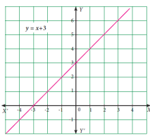
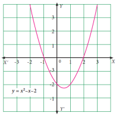
In general, the value of a polynomial p(x) at x=a, denoted p(a), is obtained by replacing x by a, where a is any real number.
Notice that the value of p(x) can be zero for many possible values of x as in the second graph 3.8. So, it is interesting to ask, for how many values of x, does p(x) become zero, and for which values ? We call these values of x, the zeros of the polynomial p(x).
Once we see that the values of the polynomial are what we plot in the graph of the polynomial, it is also easy to notice that the polynomial becomes zero exactly when the graph intersects the X-axis.
The number of zeros depends on the line or curves intersecting x-axis.
For Fig. 3.7, Number of zeros is equal to 1
For Fig. 3.8, Number of zeros is equal to 2
Value of a Polynomial
Value of a polynomial p(x) at x=a is p(a) obtained on replacing x by a(a∈R)
For example,
Consider f(x)= x2+3x-1.
The value of f(x) at x = 2 is f(2) = 22+3(2)–1 = 4+6-1 = 9.
Zeros of Polynomial
(i) Consider the polynomial p(x) = 4x3 –6x2 + 3x –14
p of x equal to 4x power 3 minus 6 x power 2 plus 3 x minus 14
The value of p(x) at x = 1 is p(1) = 4(1)3 – 6(1)2 + 3(1) – 14
= 4 – 6 + 3 – 14
= –13
Then, we say that the value of p(x) at x = 1 is – 13.
If we replace x by 0, we get p(0) = 4(0)3 – 6(0)2 + 3(0) –14
= 0 – 0 + 0 – 14
= –14
we say that the value of p(x) at x = 0 is – 14.
The value of p(x) at x = 2 is p(2) = 4(2)3 – 6(2)2 + 3(2) – 14
= 32 – 24 + 6 – 14
= 0
Since the value of p(x) at x = 2 is zero, we can say that 2 is one of the zeros of p(x) where p(x) = 4x3 –6x2 + 3x –14.
p of x equal to 4x power 3 minus 6 x power 2 plus 3 x minus 14 consider the polynomial x substitute x value 1 minus 13 substitute x value 1 minus 14 x substitute x value 2
0 became a solution
Roots of a Polynomial Equation
In general, if p(a) = 0 we say that a is zero of polynomial p(x) or a is the root of polynomial equation p(x) = 0
Example 3.7 If f(x)= x2-4x+3, then find the values of f(1), f(-1),f(2),f(3).
f of x equal x power 2 minus 4 x plus 3 then find, f(1) , f(-1) , f(2) , f(3) . f of 1 comma f of minus 1 comma f of 2 comma f of 3 comma
Also find the zeros of the polynomial f(x).
Solution
f(x)= x2-4x+3
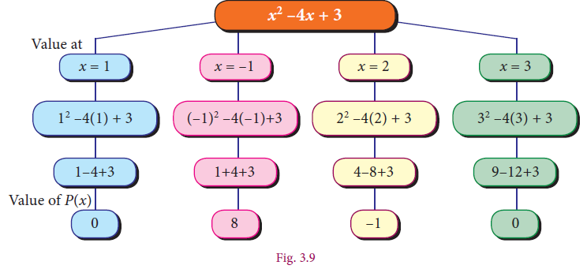
Since the value of the polynomial f(x) at x = 1 and x = 3 is zero, as the zeros of polynomial f(x) are 1 and 3.
Example 3.8 Find the Zeros of the following polynomials.
(i) f(x) = 2x + 1 (ii) f(x) = 3x–5
Romen letter 1 f of x equal 2 x plus 1
Romen letter 2 f of x equal 3 x minus 5
Solution
f(-1/ 2)=2(-1/2-(-1/2)) = 2(0) = 0
Since f(-1/ 2)= 0, x = 1/2 - is the zero of f(x)
= f(5/3)= 3( 5/3-5/3) = 3(0) = 0
Since f (5/3)=0, x = 5/3 is the zero of f(x)
Example 3.8 solution is given by
f of minus 1 by 2 equal 3 x minus 5 x equal 1/2 is the zero of f of x
f of 5 by 3 equal to 0 x equal 5 /3 is the zero of f of x
Example 3.9
Find the roots of the following polynomial equations.
Romen letter 1 5 x minus 3
Romen letter 2 minus 7 minus 4 x equal 0
Solution (i) 5x – 3 = 0 (or) 5x = 3
Then, x = 3/5
Simplify x equal 3 divided by 5
(or) 4x = – 7 Then, x = 7/-4=-7/4
Simplify x equal minus 7 divided by 4
Example 3.10 Check whether –3 and 3 are zeros of the polynomial x2 – 9
x power 2 minus 9
Solution
Let f(x) = x2 – 9 x power 2 minus 9
Then, f(–3) = (–3)2 – 9 = 9 – 9 = 0
f(+3) = 32 – 9 = 9 – 9 = 0
solution minus 3 and 3 are zeros of the polynomial 9 x power 2 minus 9
Note
1 A zero of a polynomial can be any real number not necessarily zero.
2 A non-zero constant polynomial has no zero.
3 By convention, every real number is zero of the zero polynomial
Exercise 3.2
1. Find the value of the polynomial f(y)=6y-3y2+3
(i) y = 1 (ii) y = –1 (iii) y = 0 2.
Romen letter 1 y equal 1 Romen letter 2 y equal minus 1 Romen letter 3 y equal 0
2.If p(x) = x2–2√2x +1, find p(2√2). P of x equal x power 2 minus 2 root 2 x plus 1 எனில் p bracket 2 root 2 bracket close
3.Find the zeros of the polynomial in each of the following :
p(x) = x – 3 romen letter 1 p of x is equal to x minus 3
p(x) = 2x + 5 romen letter 2 p of x is equal to 2 x plus 5
q(y) = 2y – 3 when a ≠0 romen letter 3 q of y is equal to 2 y minus 3
(iv) f(z) = 8z romen letter 4 f of z is equal to 8 z
(v) p(x) = ax romen letter 5 p of x is equal to a x
(vi) h(x)=ax+b, a ≠0 ,a,b∈ R. romen letter 6 h of x equal to a x plus b ais not equal to 0
4.Find the roots of the polynomial equations.
(i) 5x – 6 = 0 (ii) x +3 = 0
(iii) 10x + 9 = 0 (iv) 9x – 4 = 0
1 . 5x minus 6 equal 0 2. x plus 6 equal 0 3. .10 x plus 9 equal 0 4. 9x minus 4 equal 0
5. Verify whether the following are zeros of the polynomial indicated against them, or not.
(i) p(x)= 2x-1,x=1/2 romen letter 1 p of x equal 2x minus 1 , x is equal to 1 divided 2
(ii) p(x)= x3-1,x=1 romen letter 2 p of x equal x power 3 minus 1 , x is equal to 1
(iii) , p(x)= ax+b,x=-b/a (iv) p(x)= (x+3)(x-4),x=-3 romen letter 3 p of x equal a x plus b , x is equal to minus b divided a
6. Find the number of zeros of the following polynomials represented by their graphs.
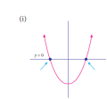
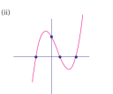
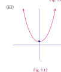
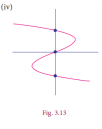
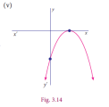
In this section , we shall study a simple and an elegant method of finding the remainder.
In the case of divisibility of a polynomial by a linear polynomial we use a well-known theorem called Remainder Theorem.
Significance of Remainder theorem : It enables us to find the remainder without actually following the cumbersome process of long division.
If a polynomial p(x) of degree greater than or equal to one is divided by a linear polynomial (x–a) then the remainder is p(a), where a is any real number.
Note
(i) If p(x) is divided by (x+a), then the remainder is p(– a)
(ii) If p(x) is divided by (ax–b), then the remainder is p( b/a )
(iii)If p(x) is divided by (ax+b), then the remainder is p(–b/a )
Example 3.11
S.No |
Question |
Solution |
Hint |
1 |
Find the remainder f(x)=x3+3x2+3x+1 is divided by x+1 F of x equal x power 3 plus 3x power 2 plus 3x plus 1
|
f(x)=x3+3x2+3x+1 f(-1)=(-1)3+3(-1)2+3(-1)+1=-1+3-3+1=0 Hence, the remainder is 0 F of minus 1 என F of x equal x power 3 plus 3x power 2 plus 3x plus 1 பி of |
g(x)=x+1 g(x)=0 x+1=0 x=-1 |
2 |
Check whether f(x)=x3-x+1 is a multiple of g(x)=2-3x f of x equal x power 3 minus x plus 1 is a multiple of g of x equal 2 minus 3 x |
f(2/3)=(2/3)3-(2/3)+1 =8/27-2/3+1 =(8-18+27)/27=17/27≠0 f (x) is not multiple of g(x) F of 2 by 3 equal 2 by 3 whole 3 minus 2 by 3 plus 1
|
g(x)=2-3x =0 Gives x=2/3 G of x equal 2 minus 3 x equal |
3 |
Find the remainder when f(x) = x3–ax2 + 6x – a is divided by (x – a) |
We have f(x) = x3–ax2 + 6x – a f(a)=a3-a(a)2+6a-a=a3-a3+5a=5a Hence the required remainder is 5a F of x equal x power 3 minus a x power 2 plus 6 x minus a Simplify value 0
|
Let g(x)=x-a g(x)=0 x-a=0 x=a G of x equal x minus a G of x equal o if x equal to a
|
4 |
For what value of k is the polynomial 2x4+ 3x3+ 2kx2+ 3x+6 exactly divisible by (x + 2) ? 2 x power 4 plus 3 x power 3 plus 2 k x power 2 plus 3 x plus 6 exactly divisible by x plus 2 |
Let f(x)= 2x4+ 3x3+ 2kx2+ 3x+6 f of x equal 2 x power 4 plus 3 x power 3 plus 2 k x power 2 plus 3 x plus 6 If f(x) is exactly divisible by (x+2), then the remainder must be zero i.e.., f(–2) = 0 i.e., 2(–2)4 + 3(–2)3 + 2k(–2)2 + 3(–2)+6=0 2(16) + 3(–8) + 2k(4) –6 + 6=0 32–24 + 8k = 0 8k = –8 , k = –1 Hence f(x) is exactly divisible by (x–2) when k = –1 |
Let g(x)=x+2 g(x)=0 x+2=0 x=-2 G of x equal x plus 2 If x equal to minus 2
|
Example 3.12 Without actual division , prove that f(x) = 2x4-6x3+3x2+3x-2
f of x equal to 2 x power 4 minus 6 x power 3 plus 3 x power 2 plus 3 x minus 2
is exactly divisible by x2 –3x + 2 x power 2 minus 3 x plus 2
Solution :
Let f(x) = 2x4-6x3+3x2+3x-2
f of x equal to 2 x power 4 minus 6 x power 3 plus 3 x power 2 plus 3 x minus 2
g(x) = x2-3x+2 g of x is equal to x power 2 minus 3 x plus 2
= x2-2x-x+2
= x(x-2)-1(x-2) = (x-2)( x-1)
bracket open x minus 2 bracket close bracket open x minus 1 bracket close
we show that f(x) is exactly divisible by (x–1) and (x–2) using remainder theorem
f(1) = 2(1)4-6(1)3+3(1)2+3(1)-2= 2 – 6 + 3 + 3 – 2 = 0
f of 1 is equal to zero
f(2) = 2(2)4-6(2)3+3(2)2+3(2)-2= 32 – 48 + 12 + 6 – 2 = 0
f of 1 is equal to zero
∴f(x) is exactly divisible by (x – 1) (x – 2)
i.e., f(x) is exactly divisible by x2 –3x + 2
If p (x)is divided by (x-a) in bracket x minus a with the remainder p (a)= 0 , then (x-a) is a factor of p (x). Remainder Theorem leads to Factor Theorem.
3.3.1 Factor Theorem
If p (x)is a polynomial of degree n≥ 1and ‘a’ is any real number then
(i) p (a) = 0 implies (x-a) is a factor of p (x).
(ii) (x-a) is a factor of p (x) implies p(a)= 0.
romen letter 1 p of in bracket a equal 0 implies (x-a) in bracket x minus a என்பது p(x) p of x
romen letter 2 in bracket x minus a is a factor of p of x is a factor of, p of a equal 0
Proof
If p (x) is the dividend and (x-a) is a divisor, then by division algorithm we write, p(x)=(x-a)q(x)+p(a) p of x equal in bracket x minus a q of x plus p of a where q of x is the quotient and p (a) is the remainder.
In this case p(a)= (a-a) g( a)
= 0X g (a)
=0
Hence, p(a)= 0,when (x-a) is a factor of p (x).
Thinking Corner
For any two integers a (a≠0) and b, a divides b if b = ax, for some integer x.
Thinking Corner
For any two integers a (a≠0) and b, a divides b if b = ax, for some integer x.
Note
( x-a)is a factor of p( x), if p(a) = 0 (x–a = 0, x = a)
(x + a) is a factor of p (x), if p(–a) = 0 (x+a = 0, x = –a)
(ax+b) is a factor of p (x), if p(-b/a)=0 ( ax+ b=0,ax=- b,x=- b/a)
(ax–b) is a factor of p (x), if p(b/ a)=0 ( ax-b=0,ax=b, = b/a )
(x–a) (x–b) is a factor of p(x), if p(a) = 0 and p(b) = 0 (x- a=0 or x-b=0 x=a or x=b)
Example 3.13 Show that (x+2 ) is a factor of x3-2x+20
To find the zero of x+2; put x + 2 = 0 we get x = –2
Solution
Let p(x)= x3-4x2-2x+20 P of x equal x power 3 minus 4 x power 2 minus 2 x plus 20
By factor theorem, (x+2) is factor of p(x),if p(-2)=0
p(-2)= (-2)3-4(-2)2-2(-2)+20
=-8-4(4)-2(-2)+20
P(-2)=0
P of minus 2 equal 0
Therefore, (x+2) is a factor of x3- 4x2-2x+20
Example 3.13 solution (x + 2) x plus 2 is a factor of x3-4x2-2x+20 x power 3 minus 4 x power 2 minus 2 x plus 20
Example 3.14 Is ( 3x-2) a factor of 3x3+x2-20x+12?
Solution Let p(x) = 3x3+x2-20x-12
By factor theorem, (3x-2) is a factor, if p(2/3)= 0
P(2/3) = 3(2/3)3+(2/3)2-20(2/3)+12
= 3(8/27)+(4/9)2-20(2/3)+12 = 8/9 +4/9-120/9+108/9
P(2/3) =(120-120/9) = 0
Therefore,(3-2x) is a factor of 3x3+x2-20x+12 3 x power 3 plus x power 2 minus 20 x plus 12
To find the zero of 3x–2; put 3x –2 = 0 3x = 2 we get x = 2/3
X value 2 divided by 3
Progress Check
1. (x+3) open bracket x plus 3 close is a factor of p(x), p of x comma if p(_) = 0
2. (3–x) open bracket 3 minus x close is a factor of p(x), p of x comma if p(_) = 0
3. (y–3) open bracket y minus 3 close is a factor of p(y), p of y comma if p(_) = 0
4. (–x–b) open bracket minus x minus b is a factor of p(x), p of x comma if p(_) = 0
5. (–x+b) open bracket minus x plus b close is a factor of p(x), p of x comma if p(_) = 0
Example 3.15 Find the value of m, if (x-2) is a factor of the polynomial 2x3-6x2+mx+4
Solution Let p(x) = 2x3-6x2+mx+4 P of x equal 2 x power 3 minus 6 x power 2 minus m x plus 4
By factor theorem, (x-2) is a factor of p(x) , if p(2) =0
p(2) = 0
2(2)3-6(2)2+m(2)+4= 0
2(8)-6(4)+2m+ 4=0
−4+2m = 0
m = 2
To find the zero of x–2; put x – 2 = 0 we get x = 2
Exercise 3.3
ANSWER 1. p(x) is not a multiple of g(x)
2. By remainder theorem, find the remainder when, p(x) is divided by g(x) where,
(i) p(x) = x3-2x2-4x-1;g(x)=x+1 p of x equal to x power 3 minus 2x power 2 minus 4xminus 1 g of x equal to x plus 1
(ii) p(x) = 4x3-12x2+14x-3;g(x)=2x-1 p of x equal to 4 x power minus 12 x power 2 plus 14x minus 3 g of x equal to 2 x minus 1
(iii) p(x) = x3-3x2+4x+50;g(x)=x-3 p of x equal to x power 3 minus 3 x power 2 plus 4x plus 50 g of x equal to x minus 3
ANSWER (i) Remainder: 0 (ii) Remainder : 3/2 (iii) Remainder : 62
3. Find the remainder when 3x3-4x2+7x-5 3x power 3 minus 4x power 2 plus 7x minus 5 is divided by (x+3) in bracket x plus 3
ANSWER 3. Remainder: –143 4. Remainder: 2019 5. K = 8
4. What is the remainder when x2018 +2018 x power 2018 plus 2018 is divided by x–1 X minus 1
ANSWER . Remainder: 2019
5. For what value of k is the polynomial p(x)= 2x3-Kx2+3x+10 exactly divisible by (x–2)
ANSWER . K = 8
6. If two polynomials 2x3 + ax2 + 4x – 12 and x3 + x2 –2x+ a leave the same remainder when divided by (x – 3), find the value of a and also find the remainder.
ANSWER a = –3, Remainder: 27
7. Determine whether (x-1) is a factor of the following polynomials:
i) x3+5x2-10x+4 ii) x4+5x2-5x+1
ANSWER (i) (x -1) is a factor (ii) (x -1)is not a factor
8. Using factor theorem, show that (x-5) is a factor of the polynomial
2x3-5x2-28x+15 2x power 3 minus 5x power 2 minus 28x plus 15
ANSWER 8. (x -5)is a factor of p(x)
9. Determine the value of m, if (x+3) x plus 3 is a factor of x3-3x2-mx+24. x power 3 minus 3x power 2 minus mx plus 24
ANSWER m = 10
10. If both (x-2)and x(x −1/2) are the factors of ax2+5x+b, a x power 5 plus 5 x plus b comma then show that a= b.
11. If (x-1) divides the polynomial kx3-2x2+25x-26 kx power 3 minus 2 x power 2 plus 25 x minus 26 without remainder, then find the value of k.
ANSWER k = 3
12. Check if (x+2) and (x-4) are the sides of a rectangle whose area is x2-2x-8 x power 2 minus 2 x minus 8 by using factor theorem.
ANSWER Yes
An identity is an equality that remains true regardless of the values chosen for its variables.
We have already learnt about the following identities:
(1)(a+b)2≡a2+2ab+b2
(2)(a-b)2≡a2-2ab+b2
(3)(a+b) (a-b)≡a2-b2
(4)(x+a)(x+b) ≡x2+(a+b)x+ab
(1) (a+b) 2≡a2+2ab+b2
Open Bracket a plus b close whole power 2 equal a power 2 plus 2 a b plus b power 2
(2) (a-b) 2≡a2-2ab+b2
Open Bracket a minus b close whole power 2 equal a power 2 minus 2 a b plus b power 2
(3) (a+b) (a-b) ≡a2-b2
Open Bracket a plus b close Open Bracket a minus b close equal a power 2 minus b power 2
(4) (x+a) (x+b) ≡x2+(a+b) x+ab
Open Bracket x plus a close Open Bracket x plus b close equal x power 2 plus Open Bracket a plus b multiply x plus ab
Note
Romen letter 1 a power 2 plus b power 2 equal in bracket a plus b whole power 2- minus 2ab
Romen letter 2 a2+b2 = (a-b) 2-2ab 1 a power 2 minus b power 2 equal in bracket a plus b whole power 2- minus 2ab
Romen letter 3 a2+1/a2 = (a+1/a) 2-2 a power 2 plus1 by a power 2 equal to within bracket a plus1 by a whole power 2- minus 2
Romen letter 4 a2+1/a2 = (a-1/a) 2+2 a power 2 plus1 by a power 2 equal to within bracket a minus1 by a whole power 2- minus 2
Example 3.16
Expand the following using identities:
Romen letter 1 in bracket 3x plus 4 y whole power minus 2
(ii) (2a-3b)2
Romen letter 1 in bracket 3x plus 4 y whole power minus 2
(iii)(5x+4y)(5x-4y)
Romen letter 3 in bracket 5 x plus 4 y multiply in bracket 5 x plus 4 y
(iv) (m+5)(m-8)
Romen letter 4 in bracket m plus 5 multiply in bracket m minus 8
Solution
(i)(3x+4y)2 (we have (a+b)2≡a2+2ab+b2)put(a=3x,b=4y)
(3x+4y)2=(3x)2+2(3x)(4y)+(4y)2
=9x2+24xy+16y2
(ii)(2a-3b)2 (we have (a-b)2=a2-2ab+b2)put(a=2a,b=3b)
(2a-3b)2 =(2a)2+2(2a)(3b)+(3b)2
=4a2-12ab+9b2
(iii)(5x+4y)(5x-4y) (we have (a+b)(a-b)=a2-b2)put(a=5x,b=4y)
(5x+4y)(5x-4y) =(5x)2-(4y)2
=25x2-16y2
(iv) (m+5)(m-8) (we have (x+a)(x-b)=x2-(a-b)x-ab
(m+5)(m-8) =m2+(5-8)m-(5)(8) put(x=m,a=5,b=8)
=m2-3m-40
(i) (3x+4y) 2 Romen letter 1 in bracket 3x plus 4 y whole power minus 2
We have (a+b) 2≡a2+2ab+b2) ] (a-b) 2 = a2-2ab+b2] Open Bracket a plus b close whole power 2 equal a power 2 plus 2 a b plus b power 2
[a = 3x,b = 4y substitute
(3x+4y) 2 = (3x) 2+2(3x) (4y) +(4y) 2
in bracket 3x plus 4 y whole power minus 2 a equal 3x , b equal 4y எனப் பிரதியிட
9x2+24xy+16y2
(ii) (2a-3b) 2 Romen letter 2 in bracket 2 a minus 3 b whole power minus 2
We have (a-b) 2 = a2-2ab+b2] Open Bracket a plus b close whole power 2 equal a power 2 plus 2 a b plus b power 2
[a = 2a,b = 3b substitute
(2a-3b) 2 = (2a) 2+2(2a) (3b) +(3b) 2
= 4a2-12ab+9b2
(iii) (5x+4y) (5x-4y)
Romen letter 3 in bracket 5 x plus 4 y multiply in bracket 5 x plus 4 y
We have (a+b) (a-b) = a2-b2]
A plus b a minus b equal a power 2 minus b power 2 a equal 5x comma ,b equal 4y substitute
(5x+4y) (5x-4y) in bracket 5 x plus 4 y multiply in bracket 5 x plus 4 y equal 5x whole bracket power 2 minus 4y power 2
= 25x2-16y2
(iv) (m plus 5) (m minus 8)
(x+a) (x-b) = x2-(a-b) x-ab] in bracket x plus a in bracket x plus b equal in bracket x power 2 minus a minus b x minus ab bracket close
(m+5) (m-8) = m2+(5-8) m-(5) (8)
x equal m comma a =equal 5 comma b equal 8 substitute
solution m power 2 minus 3m minus 40
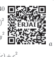
(a+b+c)2 We know that (x+y)2 = x2+2xy+y2
a plus b plus c whole bracke power 2
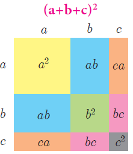
Put x=a+b,y=c,
Then, (a+b+c)2=(a+b)2+2(a+b)(c)+c2
=a2 +2ab +b2+2ac +2bc +c
= a2+ b2+c2 +2ab +2bc+2ca
Thus, (a+b+c)2≡ a2+ b2+c2 +2ab +2bc+2ca
a plus b plus c whole bracket power 2 equal a power 2 plus b power 2 c power 2 plus 2 a b plus 2 b c plus 2 c a
Example 3.17 Expand a minus b plus c whole power 2 (a-b+c)2
Solution Replacing ‘b’ by ‘-b ’ in the expansion of
(a+b+c)2= a2+b2+c2+ 2ab +2bc+2ca
(a+(-b)+c)2= a2+(-b)2+c2+ 2a(-b) +2(-b)c+2ca
= a2+-b2+c2- 2ab-2bc+2ca
example 3.17 solution a minus b plus c whole power 2 expand a power 2 plus b power 2 plus c power 2 minus 2 a b minus 2 b c plus 2 c a
Example 3.18 Expand (2x+3y+4z)2 In bracket 2x plus 3y plus 4z whole power 2
Solution We know that,
(a+b+c)2= a2+b2+c2+ 2ab +2bc+2ca
Substituting, a=2x,b=3y an c=4z
(2x+3y+4z)2= (2x)2+ (3y)2 +(4z)2 +2(2x)(3y) +2(3y)(4z)+2(4z)(2x) = 4x2+ 9y2+ 16z2 +12xy +24yz+16xz
Example 3.18 solution In bracket 2x plus 3y plus 4z whole power 2 substitute a equal 2x comma b equal 3y c equal 4z answer 4x power 2 plus 9y power 2 plus 16 z power 2 plus 12xy plus 24yz plus 16xz
Progress check
Expand the following and verify :
(a+b+c)2=(-a-b-c)2
(-a+b+c)2=(a-b-c)2
(a-b+c)2=(-a+b-c)2
(a+b-c)2=(-a-b+c)2
In bracket a plus b plus c whole bracket power 2 equal in bracket minus a minus b minus c whole bracket power 2
In bracket a plus b plus c whole bracket power 2 equal in bracket plus a minus b minus c whole bracket power 2
In bracket a minus b plus c whole bracket power 2 equal in bracket minus a plus b minus c whole bracket power 2
In bracket a plus b minus c whole bracket power 2 equal in bracket minus a minus b plus c whole bracket power 2
Example 3.19 Find the area of square whose side length is 3m+2n-4l 3 m plus 2 n minus 4
Solution Area of square = side X side
= (3m+2n-4l)X(3m+2n-4l) = (3m+2n-4l)2
We know that (a+b+c)2≡ a2+ b2+c2 +2ab +2bc+2ca
(3m+2n-4l)2 =(3m)2+(2n)2+(-4l)2+2(3m)(2n)+2(2n)(-4l)+2(-4l)(3m)
=9m2+4n2+16l2+12mn-16ln-24lm
Therefore, Area of square = [ 9m2+4n2+16l2+12mn-16ln-24lm] sq. Units.
3 m plus 2 n minus 4 l find area of a square
a equal 3 m
b equal 2 n
c equal minus 4 substitute the area of square is 9m power 2 plus 4n power 2 plus 16 l power 2 plus 12 m n minus 16 l n minus 24 l m
(x+a)( x+b)( x+c)=[( x+a) (x+b)] (x+c)
=[x2+(a+b)x+ab] (x+c)
= x2x+(a+b)(x)(x)+abx+x2c+(a+b)(x)c+abc
=x3+ax2+bx2+abx+cx2+acx+bcx+abc
=x3+(a+b+c)x2+(ab+bc+ca)x+abc
Thus, (x+a)( x+b)( x+c)= =x3+(a+b+c)x2+(ab+bc+ca)x+abc
x power 3 plus in bracket a plus b plus c x power 2 plus in bracket ab plus bc plus ca x plus abc
Example 3.20
Expand the following:
(i) (x+5)( x+6)( x+4) (ii)(3x-1)(3x+2)(3x-4)
Romen letter 1 in bracket x plus 5 in bracket x plus 6 in bracket x plus 4
Romen letter 2 (3x-1) (3x+2) (3x-4) in bracket 3x minus 1 3x plus 2 3x minus 4
Solution
We know that (x+a)( x+b)( x+c)= x3+(a+b+c)x2+(ab+bc+ca)x+abc------(1)
All in bracket x plus a x plus b x plus c x power 3 plus in bracket a plus b plus c x power 2 plus in bracket ab plus bc plus ca x plus abc
(Replace a by 5 b by 6 c by 4 in (1))
= x3+15x2+74x+120
(ii)(3x-1)(3x+2)(3x-4)= (3x)3+(-1+2-4)(3x)2+(-2-8+4)(3x)+(-1)(2)(-4)
(Replace x by 3x, a by –1, b by 2, c by –4 in (1))
= 27x3+(-3)9x2+(-6)(3x)+8
Example 3.20 solution
a equal 3m
b equal 2n
c equal minus 4l என in bracket x plus 5 in bracket x plus 6 in bracket x plus 4 substitute we get 27x power 3 plus minus 3 bracket close 9x power 2 plus minu6 multiply 3x plus 8
answer 27x power 3 plus minus 3 bracket close 9x power 2 plus minu6 multiply 3x plus 8
3.4.3 Expansion of (x+y)3 and (x-y)3
(x+a)( x+b)( x+c)≡ x3+(a+b+c)x2+(ab+bc+ca)x+abc
substituting a= b= c= yin the identity
we get, (x+y)( x+y)( x+y) =x3+(y+y+y)x2 +(yy+yy+yy)x +yyy
Thus, (x+y)3≡x3+3x2y+3xy2+y3 (or) (x+y)3≡x3+y3 +3xy(x+y)
by replacing y by -y, we get (x-y)3≡x3-3x2y+3xy2-y3 (or) (x-y)3≡x3-y3 +3xy(x-y) =x3+(3y)x2+(3Y2)x+y2
x plus y whole bracket cube and x minus y whole bracket cube expand below
x minus y power 3 identically equal to x power 3 minus 3 x power 2 y plus 3xy power 2 minus y power 2 (or) x minus y whole bracket cube identically equal to x power 3 minus y power 3 plus 3xy in bracket x minus y
Example 3.21 Expand (5a-3b)3
Solution We know that (x-y)3 = x3-3x2y+3xy2-y3
(5a-3b)3 = (5a)3-3(5a)2(3b)+3(5a)(3b)2-(3b)2
=125a3-3(25a2)(3b)+3(5a)(9b2)-(3b)3= 125a3-225a2b+135ab2-27b3
The following identity is also used:
x 3+y3+z3-3 xyz= (x+ y+ z)( x2+ y2+ z2- xy- yz- zx)
We can check this by performing the multiplication on the right-hand side.
Note (i) If (x+y+z) = 0 then x3+ y3+z3=3 xyz then x3+y3+z3=3xyz
Some identities involving sum, difference and product are stated without proof
5a-3b) 3 expand
X power 3 plus y power 3 plus z power 3 minus 3 xyz equal in bracket x plus y plus z in bracket x power 2 plus y power 2 plus z power 2 minus xy minus yz minus zx
Example 3.22
Find the product of (2x+3y+4z)(4x2+9y2+16z2-6xy-12yz-8zx
Solution We know that (a+b+c)(a2+b2+c2-ab-bc-ca)= a3+ b3+ c3-3abc
(2x+3y+4z)(4x2+9y2+16z2-6xy-12yz-8zx)= (2x)3+(3y)3+(4z)3-3(2x)(3y)(4z)
= 8x3+27y3+64z3-72xyz
example 3.22 solution in bracket 2x plus 3y plus 4z multiply in bracket 4 x 2plus 9y2 plus 16z2 minus 6xy minus 12yz minus 8zx the product of 8x power 3 plus 27y power 3 plus 64z power 3 minus 72xyz
Example 3.23
Evaluate 10 power 3 minus 15 power 3 plus 5 power 3 103-153+53
S o l u t ion we know that if a+b+c= 0 , then a3+b3+c3 = 3 abc
(replace a by 10 ,b by –15, c by 5)
Here a+b+c=10−15+5=0
Therefore, 103+(-15)3+53= 3(10)(-15)(5)
103-153+53 = − 2 2 50
Example 3.23 solution
a equal 10
b equal minus 15
c equal 5 substitute
10 power 3 minus 15 power 3plus 5 power 3 equal minus 2 2 50
Exercise 3.4
(ii)1/a+ 1/b+ 1/c (iii) a2+ b2+ c2 (iv) a/bc+b /ac+c/ab
4. Expand: ( 3a- 4b )3 ( ii)( x+1/y)3
5. E valuate the following by using identities: (i) 983 (ii) 10013
6. If ( x +y +z) = 9 n and (xy+yz+zx) = 26 then find the value of x2+y2+z2.
7. Find 27a3 +64 b3 , if 3a+4b=10 and ab=2
8. Find x3-y3, i f x −y=5 and xy=14
9. If a +1/a= 6 , t h e n find the value of a3+1/a3.
10. If x3+1/x3, t h e n find the value of x+1/x and x3+1/x3.
11. I f (y-1/y)3=27, then find the value of y3-1/y3
12. Simplify: (i) (2a+3b+4c)(4a2+9b2+16c2-6ab-12bc-8ca)
(ii)(x-2y+3z)(x2+4y2+9z2+2xy+6yz-3xz)
13. By using identity evaluate the following:
(i) 73 -103 +33 (ii) 1+ 1/ 8- 27/ 8
14. If 2x-3y-4z=0, 2x minus 3y minus 4z equal 0 then find 8x3 -27y3 -64z3. 8x power 3 minus 27y power 3 minus 64 z power 3
Exercise 3.4 ANSWERS
1. (i) x2+4y2+9z2+4 xy+12yz+6xz (ii) p2+4q2+9r2-4pq+12qr-6pr
(iii) 8p3-24p2-14p+60 (iv) 27a3+27a2-18a-8
2.(i) 18,107,210 (ii) −32, −6, +90
3. (i) 14 (ii) 59/70 (iii) 78 (iv) 78/70
4. (i) 27a3 – 64b3 – 108a2b + 144ab2 (ii) x3+1/y3+3x2/y+ 3x/y2
5.(i) 941192 (ii) 1003003001
6. 29
7. 280
8. 335
9. 198
10. +5, +110
11. 36
12. (i) 8a3+27b3+64c3-72abc (ii) x3-8y3+27z3+18xyz
13.(i) −630 (ii) -9/4
14. 72xyz
Factorisation is the reverse of multiplication.
For Example : Multiply 3 and 5; we get product 15.
Factorise 15; we get factors 3 and 5.
For Example : Multiply (x + 2) and (x + 3);
we get product x2+5x+6. Factorise x2+5x+6 ;we get factors (x + 2) and (x + 3).
(x+3)(x+2)
Multiply x(x+2)+3(x+2)
x2+2x+3x+6
x2+5x+6
(x+3)(x+2)
Factorise x(x+2)+3(x+2)
x2+2x+3x+6
x2+5x+6
Thus, the process of converting the given higher degree polynomial as the product of factors of its lower degree, which cannot be further factorised is called factorisation.
Two important ways of factorisation are :
(i)By taking common factor
ab+ ac
axb+axc
a(b+c) factored form
a+b-pa-pb
(a+b)-p(a+b)group in pairs
(a+b)(1-p)factored form
When a polynomial is factored, we “factored out” the common factor.
Example 3.24 Factorise the following: (i) am+ bm+ cm (ii) a3- a2b (iii) 5a-10b-4bc+2ac (iv) x+y-1- xy
Romen letter 1 am plus bm plus cm
Romen letter 2 a power 3 minus a power 2 b
Romen letter 3 5a-10b-4bc+2ac 5a minus 10 b- 4ac plus 2bc
Romen letter 4 x+y-1- xy xplus y minus 1 minus xy
Solutions
(i) am+bm+cm
am+bm+cm
m(a+b+c)factored form
(ii) a3- a2b
a2a- a2b group in pairs
a2x(a-b)factored form
(iii)5a-10b-4bc+2ac
5a-10b+2ac-4bc
5(a-2b)+2c(a-2b)
(a-2b)(5+2c) all in bracket a minus 2b 5 plus 2c
(iv) x+y-1- xy xplus y minus 1 minus xy
(a-b=-(b-a))
x-1+y-xy
(x-1)+y(1-x)
(x-1)-y(x-1)
(x-1)(1-y) all in bracket x-1 1-y
(i)a2+2ab+b2≡(a+b)2
(ii)a2-2ab+b2≡(a-b)2
(iii) a2-b2 ≡(a+b) (a-b)
(iv) a2+ b2+c2 +2ab +2bc+2ca≡ (a+b+c)2
(v)a3+b3≡(a+b)(a2-ab+b2)
(vi) a3-b3≡(a-b)(a2+ab+b2)
(vii)a3+b3+c3-3abc≡(a+b+c)(a2+b2+c2-ab-bc-ca)
Note
(a+b)2+(a-b)2=2(a2+b2); a4-b4=(a2+b2)(a+b)(a-b)
(a+b)2-(a-b)2=4ab; a6-b6=(a=b)(a-b)(a2-ab+b2)( a2+ab+b2)
Progress check
Prove: (i)(a+1/a)2+(a-1/a)2=2(a2+1/a2)
(ii)(a+1/a)2-(a-1/a)2=4
Example 3.25
Factorise the following: (i) 9x2+12xy+4y2 (ii) 25a2-10a+1 + (iii) 36m2-49n2
Solution
(i) 9x2+12xy+4y2 = (3x)2+2(3x)(4y)+2y2 [∴ a2+2ab+b2=(a+b)2]
= (3x +2y )2
(ii) 25a2-10a+1 = (5 a)2 −2(5a )(1)+12
= (5a −1)2 (a2-2ab+b2=(a -b)2
(iii) 36m2-49n2 = (6 m)2 - (7 n)2
= (6m +7n)(6m −7n) (a2-b2=(a+b)(a-b))
(iv)x3- x=x(x2-1)
=x(x2-12)
=x(x+1)(x-1)
(v) x4-16= x4 -24
=( x2 +22)( x2 -22)
=( x2 +4)( x +2)( x -2)
(vi) x2+ y2+ z2- 4xy+12yz-6xz
=(-x)2+(2y)2+(3z)2+2(-x)(2y)+2(2y)(3z)+2 (3z)(-x)
=(-x+2y+3z) 2 (or)(x-2y-3z)2
Example 3.26
Factorise the following: (i) 27x3+ 125y3 (ii) 216m3- 343 n3 (iii) 2 x4 -16xy3
(iv)8x3 +27y3 +64 z3 -72xyz
Solution (i) 27x3+ 125y3 = ( 3x)3+ (5y)3 [ (a3+b3)= (a+b)(a2-ab+b2 )
=(3x+ 5y)((3x)2-(3x)(5y)+(5y)2)
=(3x+ 5y)(9x2-15xy+25y2)
=(6m-7n)((6m)2+(6m)(7n)+(7n)2)
=(6m-7n) )(36m2+42mn+49n2)
= 2x ( x3-(2y)3)[( a3-b3)= (a-b)(a2+ab+b2)]
=2x((x-2y)(x2+(x)(2y)+(2y)2)
=2x(x-2y)(x2+2xy+4y2)
=(2x+3y+4z)(4x2+9y2+16z2-6xy-12yz-8xz)
i) 27x3+ 125y3 = (3x) 3+ (5y) 3 [(a3+b3) = (a+b) (a2-ab+b2)
= (3x+ 5y) ((3x) 2-(3x) (5y) +(5y) 2)
= (3x+ 5y) (9x2-15xy+25y2)
= (6m-7n) ((6m) 2+(6m) (7n) +(7n) 2)
= (6m-7n) ) (36m2+42mn+49n2)
= 2x (x3-(2y) 3) [ a3-b3) = (a-b) (a2+ab+b2]
= 2x((x-2y) (x2+(x) (2y) +(2y) 2)
= 2x(x-2y) (x2+2xy+4y2)
= (2x+3y+4z) (4x2+9y2+16z2-6xy-12yz-8xz)
Romen letter 1 27x power 3 plus 125 y power 3 solution 3x plus 5y (9x power 2 minus 15xy plus 25y power 2
Romen letter 2 216 m power 3 minus 343 n power 3 3 solution 6m minus 7n 36 m power 2 42 mn plus 49n power 2
Romen letter 3 2 x power 4 -16xy power 3 equal 3 solution 2x multiply x minus 2y in bracket x power 2 plus 2xy plus 4y power 2
Romen letter 4 8x power 3 plus 27y power 3 plus 64 z power 3 minus 2xyz 3 தீர்வு 2x plus 3y plus 4z (4xpower 2 plus 9 y power 2 plus 16 z power 2 minus 6xy minus 12yz minus 8xz)
Thinking corner
Check 15 divides the following (i) 20173 + 20183 (ii) 20183 – 19733
Exercise 3.5
1. Factorise the following expressions: (i) 2a2+ 4a2b+ 8a2c (ii) ab-ac-mb-mc
2. Factorise the following: (i) x2+ 4x +4 (ii) 3a2-24ab+48b2 (iii) x5 -16 (iv) m2+1/ m-23 (v) 6- 216 x2 (vi) a2+1/ a2-18
3. Factorise the following: (i) 4x2+ 9y2+ 25z2+ 12xy+ 30yz +20xz
(ii) 25x2+ 4y2+ 9z2- 20xy+ 12yz- 30xz
4. Factorise the following: (i) 8 x3 +125 y3 (ii) 27 x3 -8 y3 (iii) a6 -64
5. Factorise the following: (i) x3 +8 y3 +6xy-1 (ii) l3 -8 m3 – 27n3 -18 lmn
3.point 5.point2 Factorising the Quadratic Polynomial (Trinomial) of the type a x2 +bx +c ,a≠ 0,
The linear factors of a x2 +bx +c will be in the form(kx+ m)and (lx+ n)
Thus, a x2 +bx +c = (kx+ m)and (lx+ n)= klx2+( lm+ kn) x+ mn
Comparing coefficients of x2, x , and constant term c on both sides.
We have, a=kl, b=(lm+ kn) and c = mn, where ac is the product of kl and mn that is, equal to the product of lm and kn which are the coefficient of x. Therefore (klX mn)=(lmxkn).
Steps to be followed to factorise ax2+bx+c :
Step 1 : Multiply the coefficient of x2 and constant term, that is ac.
Step 2 : Split ac into two numbers whose sum and product is equal to b and ac respectively.
Step 3 : The terms are grouped into two pairs and factorise.
Example 3.27
Factorise 2x2+ 15x+ 27
Solution
Compare with a x2 +bx+ c
we get, a=2, b=15, c =27
product ac = 2×27= 54 and sum b = 15 We find the pair 6, 9 only satisfies “b = 15”
Product of numbers ac=54 |
sum of numbers b=15 |
Product of numbers ac=54 |
Sum of numbers b=15 |
1 x 54 |
55 |
-1 x -54 |
-55 |
2 x 27 |
29 |
-2 x -27 |
-29 |
3 x 18 |
21 |
-3 x -18 |
-21 |
6 x 9 |
15 |
-6 x -9 |
-15 |
The required factors are 6 and 9 |
|||
and also “ac = 54”.
we split the middle term as 6x and 9x
2x2 +15x+ 27= 2x2 +6x+9x+ 27
= 2x(x+3) +9(x+3)
=(x+3)(2X+9)
Therefore, (x + 3)and (2x+9) are the factors of 2 x2 +15x+ 27.
Factorise 2x2+ 15x+ 27 we get Therefore, (x + 3)and (2x+9) are the factors of 2 x2 +15x+ 27.
Example 3.28 Factorise 2x2-15x+27
Solution Compare with ax2 +bx+ c
we get, a=2, b=15, c =27
product ac = 2×27= 54 and sum b = -15
we split the middle term as –6x and –9x
2x2 -15x+ 27= 2x2 -6x-9x+ 27
= 2x(x-3) -9(x-3)
=(x-3)(2X-9)
2 x power 2 minus 15 x plus 27 factorixze we get answers
, x minus 3 and 2x minus 9
Therefore, (x -3)and (2x-9) are the factors of 2 x2 -15x+ 27.
Product of numbers ac=54 |
sum of numbers b=15 |
Product of numbers ac=54 |
Sum of numbers b=15 |
1 x 54 |
55 |
-1 x -54 |
-55 |
2 x 27 |
29 |
-2 x -27 |
-29 |
3 x 18 |
21 |
-3 x -18 |
-21 |
6 x 9 |
15 |
-6 x -9 |
-15 |
The required factors are -6 and -9 |
|||
Example 3.29 Factorise 2x2+15x-27
Solution
Compare with ax2 +bx+ c
we get, a=2, b=15, c =-27
product ac = 2×-27= -54 and sum b = 15
we split the middle term as 18x and –3x
2x2 +15x- 27= 2x2 +18x-3x- 27
= 2x(x+9) -3(x+9)
=(x+9)(2X-3)
Therefore, (x +9)and (2x-3) are the factors of 2 x2 +15x- 27.
Product of numbers ac=-54 |
sum of numbers b=15 |
Product of numbers ac=-54 |
Sum of numbers b=15 |
-1 x 54 |
53 |
1 x -54 |
-53 |
-2 x 27 |
25 |
2 x -27 |
-25 |
-3 x 18 |
15 |
3 x -18 |
-15 |
-6 x 9 |
3 |
6 x -9 |
-3 |
The required factors are -3 and 18 |
|||
2 x power 2 plus 15 x minus 27 factorize these are the factors
x plus 9 and 2x minus 3
Example 3.30 Factorise 2x2-15x-27
Compare with ax2 +bx+ c
we get, a=2, b=-15, c =-27
product ac = 2×-27= -54 and sum b = -15
we split the middle term as -18x and 3x
2x2 -15x- 27= 2x2 -18x+3x- 27
= 2x(x-9) +3(x+9)
=(x-9)(2X+3)
Therefore, (x -9)and (2x+3) are the factors of 2 x2 -15x- 27.
2x2-15x-27 2 x power 2 minus 15 x minus 27 factorize we get the factors x minus 9 multiply 2x plus 3
Example 3.31 Factorise (x+y)2+9 (x+y )+20
Solution
Product of numbers ac=-54 |
sum of numbers b=-15 |
Product of numbers ac=-54 |
Sum of numbers b=-15 |
-1 x 54 |
53 |
1 x -54 |
-53 |
-2 x 27 |
25 |
2 x -27 |
-25 |
-3 x 18 |
15 |
3 x -18 |
-15 |
-6 x 9 |
3 |
6 x -9 |
-3 |
The required factors are 3 and 18 |
|||
Let x +y= p, we get p2+ 9p+ 20
Compare with ax2 +bx+ c
we get, a=1, b=9, c =20
product ac = 1×20= 20 and sum b = 9
we split the middle term as 4p and 5p
p2 +9x+ 20= p2 +4p+5p+ 20
= p(p+4) +5(p+4)
=(p+4)(p+5)
Put,p=x+y we get,(x+y)2+9(x+y)+20=(x+y+4)( x+y+5)
Solution X plus y power 2 plus 9 x plus y plus 20
P equal x plus y substitute we get
x plus y plus 9 x plus y plus 20 equal x plus yplus 4 x plus y plus 5
Exercise 3.6
1.Factorise the following:
(i) x2+10x +24
(ii) z2+4z -12
(iii) p2-6p -16
(iv) t2+72 -17t
(v) y2-16y -80
(vi) a2+10a-600
Answer 1.(i) (x+6) (x+4)
(ii) (Z+6) (Z-2)
(iii) (p-8) (p+2)
(iv) (t-9) (t-8)
(v) (y-20) (y+4)
(vi) (a+30) (a-20)
2. Factorise the following:
(i) 2a2+9a +10
(ii) 5 x2-29y-42y2
(iii) 9-18x+ 8x2
(iv) 6 x2+16xy +8y2
(v) 12 x2+36x2y +27y2x2
(vi) (a+b)2+9(a+b)+18
Answer 2. (i) (2a+5) (a+2)
(ii) (x-7y) (5x+6y)
(iii) (2x-3)(4x-3)
(iv) 2(3x+2y)(x+2Y)
(v)3x2(3y+2)2
(vi) (a+b+6) (a+b+3)
4.Factorise the following:
(i) (p-q)2-6(p-q)-16
(ii) m2+2mn -24 n2
(iii) √5 a2+2a-3√5
(iv) a4-3a2 +2
v) 8 m3-2m2n-15mn2
(vi) 1/x2+1/y2+2/xy
answer
(i) (p-q-8) (p-q-2)
(ii) (m+6n) (m-4n) ( iii) (a+√5)( √5a-3)(iv) (a+1)(a-1)(a2-2)
(v) m(4m+5n) (2m-3n)
(vi) (1/x+1/y)2
Let us consider the numbers 13 and 5. When 13 is divided by 5 what is the quotient and remainder.?
Yes, of course, the quotient is 2 and the remainder is 3. We write 13 = (5×2)+3
Let us try.
Divide |
Expressed as |
Remainder |
Divisor |
11 by 4 |
(4×2)+3 |
3 |
4 |
22 by 11 |
(11×2)+0 |
0 |
11 |
Dividend = ( Divisor × Quotient ) + Remainder.
From the above examples, we observe that the remainder is less than the divisor.
Let p(x) and g(x) be two polynomials such that degree of p(x)> degree of g(x) and g(x) ! 0. Then there exists unique polynomials q(x) and r(x) such that
p(x) =g (x)x q(x)+r (x) … (1)
where r(x) = 0 or degree of r(x) < degree of g(x).
The polynomial p(x) is the Dividend, g(x) is the Divisor, q(x) is the Quotient and r(x) is the Remainder. Now (1) can be written as
Dividend = (Divisor × Quotient) + Remainder.
If r(x) is zero, then we say p(x) is a multiple of g(x). In other words, g(x) divides p(x).
If it looks complicated, don’t worry! it is important to know how to divide polynomials, and that comes easily with practice. The examples below will help you.
Example 3.32 Divide by, where x ≠0
Solution
We have
x3-4x2+6 x /x= x3/x-4x2/x+6x/x, x≠0
= x2-4x+6
Example 3.33 Find the quotient and the remainder when (5x2-7x+6) /(x-1)
Solution
(5x2-7x+6) /(x-1)
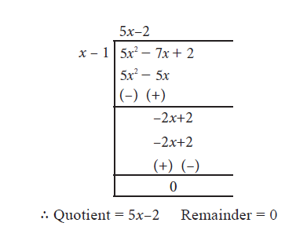
Example 3.34 Find quotient and the remainder when f(x) is divided by g(x) (i) f(x) = (8x3–6x2+15x–7), g(x) = 2x+1. (ii) f(x) = x4 –3x3 + 5x2 –7, g(x) = x2 + x + 1
solution
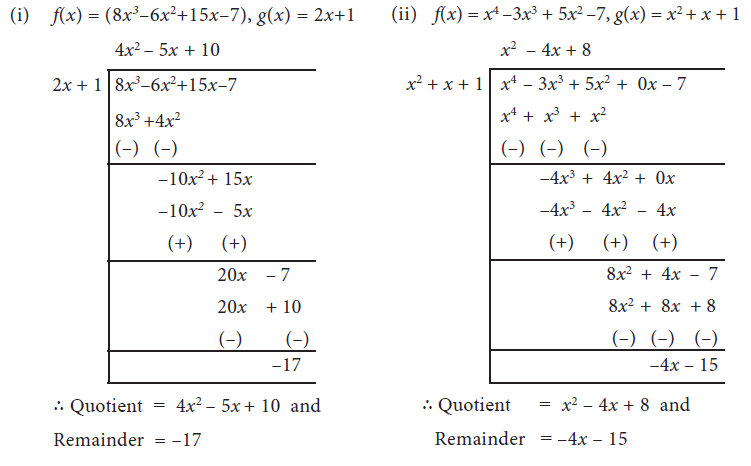
Synthetic Division is a shortcut method of polynomial division. The advantage of synthetic division is that it allows one to calculate without writing variables, than long division.
Example 3.35 Find the quotient and remainder when p(x)=( (3x3-2x2-5+7x)) is divided by d(x) = x + 3 using synthetic division.
Solution
Step 1 Arrange dividend and the divisor in standard form.
3x3-2x2-5+7x (standard form of dividend)
x + 3 (standard form of divisor)
Write the coefficients of dividend in the first row. Put ‘0’ for missing term(s).
3 −2 7 −5 (first row)
Step 2 Find out the zero of the divisor. X+3=0 implies x = −3
Step 3 Write the zero of divisor in front of dividend in the first row. Put ‘0’ in the first column of second row.
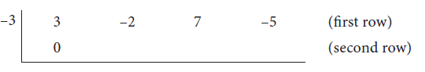
Step 4 Complete the second row and third row as shown below.
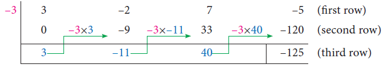
All the entries except the last one in the third row are the coefficients of the quotient. Then quotient is 3x2-11x+40 and remainder is -125.
Example 3.36
Find the quotient and remainder when ( 3x3-4x2-5) is divided by (3x+1) using synthetic division.
Solution
Let p(x) = 3x2-4x2-5, d(x)=(3x+1)
Standard form: p(x) = 3x2-4x2+0x-5and d(x)=(3x+1)
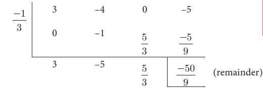
3x2-4x2-5 =(x+1/3)( 3x2-5x-5/9)-(50/9)
3x2-4x2-5=(3x+1)/3X3(3x2-5x-5/9)-(50/9)
=(3x+1)( x2-5/3x-5/9)-(50/9)(since, p(x)=d(x)q(x)+r)
Hence the quotient is (x2-5/3x-5/9) and remainder is -50 /9
Example 3.37
If the quotient on dividing x4+ 10x3 +35x2+50 x+29 by (x + 4) is x3-ax2+bx+6, then find the value of a, b and also remainder.
If the quotient on dividing x power 4 plus 10 x power 3 plus 35x power 2 plus 50 x plus 29 (x + 4) by x plus 4 by is x3-ax2+bx+6, then find the value of a, b and also remainder.
Solution
To find the zero of x+4; put x + 4 = 0 we get x = –4
Let p(x)= x4+ 10x3 +35x2+50 x+29
Standard form = x4+ 10x3 +35x2+50 x+29
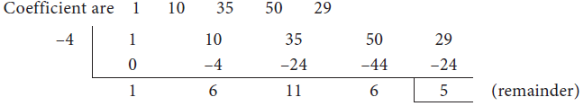
quotient x3-6x2+11x+6 is compared with given quotient x3-ax2+bx+6
coefficient of x2 is 6 =−a and coefficient of x is 11 = b
Therefore, a =−6 , b = 11 and remainder= 5.
A equal minus 6 b equal 11 comma 11 and remainder 5
Exercise 3.7
1. Find the quotient and remainder of the following.
(i) (4x3 + 6x2 – 23x +18) / (x+3)
(ii) (8y3 – 16y2 + 16y –15) / (2y–1)
iii (8x3 – 1) / (2x–1)
(iv) (–18z + 14z2 + 24z3 +18) / (3z+4)
Romen letter 1 4 x power 3 plus 6x power 3 minus 23 x plus 18 by x plus 3
Romen letter 2 8y power 3 minus 16y power 2 plus 16y minus 15 by 2y–1
Romen letter 3 8x power 3 minus 1 by 2x minus 1
Romen letter 4 minus 18z plus 14z power 2 plus 24z power 3 plus 18) divided by 3z plus 4
ANSWER 1. (i) Quotient: 4x2–6x–5, Remainder : 33 (ii) Quotient : 4y2–6y+5, Remainder : –10
(iii) Quotient: 4x2+2x+1, Remainder : 0 (iv) Quotient : 8z2–6z+2, Remainder : 10
2. The area of a rectangle is x2 + 7x + 12. If its breadth is (x+3), then find its length.
3. The base of a parallelogram is (5x+4). Find its height, if the area is 25x2–16.
4. The sum of (x+5) observations is (x3+125). Find the mean of the observations.
ANSWER
2. Length: x+4
3. Height: 5x–4
4. Mean: x2–5x+25
5. Find the quotient and remainder for the following using synthetic division:
(i) (x3+ x2-7x-3)/ (x-3)
(ii) (x3+ 2x2-x-4)/ (x+3)
(iii)(3x3-2x2+7x-5)/ (x+3)
(iv) ( 8x4-2x2+6x+5)/ (4x+1)
ANSWER 5. (i) x2+ 4x+5,12 + +, (ii) (x2-1),-2 (iii) 3x2-11x+40, -125 (iv)2x3- x2/2-3x/8 +51 /32, 109/ 32
6. If the quotient obtained on dividing (8x4-2x2+6x-7) by (2x+1) is (4x3+ px2-qx+3), then find p, q and also the remainder.
7. If the quotient obtained on dividing 3x3+ 11x2+34x+106 by x - 3 is 3x2+ax+b), then find a, b and also the remainder.
ANSWER
6. 4x3-2x2+3, p=-2,q=0,remainder=−10
7. a=20, b=94, & remainder=388
In this section, we use the synthetic division method that helps to factorise a cubic polynomial into linear factors. If we identify one linear factor of cubic polynomial p( x) then using synthetic division we can get the quadratic factor of p (x). Further if possible one can factorise the quadratic factor into linear factors.
Note
For any non-constant polynomial p(x), x = a is zero if and only if p(a) = 0
x–a is a factor for p(x) if and only if p(a) = 0 (Factor theorem)
To identify (x – 1) and (x + 1) are the factors of a polynomial
(x–1) is a factor of p(x) if and only if the sum of coefficients of p(x) is 0.
(x+1) is a factor of p(x) if and only if the sum of the coefficients of even power of x, including constant is equal to the sum of the coefficients of odd powers of x
Example 3.38
Romen letter 1 x3-7x2+13x-7 x power 3 minus 7 x power 2 plus 13 x minus 7 க்கு (x-1) in bracket x minus 1
Romen letter 2 x3-7x2+13x+7 x power 3 minus 7 x power 2 plus 13 x plus 7 க்கு (x-1) in bracket x plus 1 -க்கு (x +1)
Solution
Sum of coefficients = 1−7+13−7=0
Thus (x -1) is a factor of p (x)
Sum of coefficients of even powers of x and constant term = 7 + 7 = 14
Sum of coefficients of odd powers of x = 1 + 13 = 14
Hence, (x +1) is a factor of q( x)
Example 3.39
Factorise x3 +13x2+32x+20 into linear factors.
x power 3 plus 13 x power 2 plus 32 plus 20
Solution Let, p(x)= x3 +13x2+32x+20
x power 3 plus 13 x power 2 plus 32 plus 20
Sum of all the coefficients= 1+13+32+20=66≠ 0
Hence, (x -1)is not a factor.
Sum of coefficients of even powers and constant term = 13 + 20 = 33
Sum of coefficients of odd powers = 1 + 32 = 33
Hence, (x +1)is a factor of p(x)
Now we use synthetic division to find the other factors
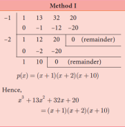
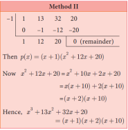
Example 3.40 Factorise x3 -5x2-2x+24
Solution Let p(x)= x3 -5x2-2x+24
When x = 1,p(1)=1-5-2+ 24= 18≠ 0; (x -1)is not a factor.
When x = –1, p(-1) = -1-5 +2+ 24= 20 ≠0 ; (x+1) is not a factor.
Therefore, we have to search for different values of x by trial-and-error method.
When x = 2 p(2) = 23-5(2)2+24=8-20-4+24= 8≠ 0 Hence, (x–2) is not a factor
When x =−2 p(-2) = (-2)3-5(-2)2 -2(-2) +24 = -8-20+4 +24
p(-2) = 0
Hence, (x+2) is a factor
P of x equal x power 3 – 5 x power 2 minus 2 x plus 24 factorize solution x = 1 then p of 1 equal 18 x minus 1 not a factor
x equal minus 1 எனில் p of minus 1 equal 20 x plus 1 is not a factor
p of plus 1 equal 8 x plus 1 x minus 2 is not a factor
p of minus 1 equal minus 8 x plus 1 x plus 2 is not a factor
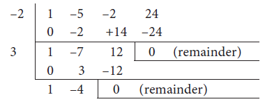
Note
Check whether 3 is a zero of x2-7 x+12. If it is not, then check for –3 or 4 or –4 and so on.
Thus, (x+2)( x-3)( x-4) are the factors. Therefore, x3 -5x2-2x2+24 = (x+2)( x-3)( x-4)
Exercise 3.8
1. Factorise each of the following polynomials using synthetic division:
(i) x3 -3x2-10x+24
(ii) 2x3 -3x2-3x+2
(iv) x3 +x2-14x-24
(v) x3 -7x+6
(vi) x3 -10x2-x+10
Romen letter 1 x3 -3x2-10x+24 x power 3 minus 3 x power 2 minus 10 x plus 24
Romen letter 2 2x3 -3x2-3x+2 x power 3 minus 3 x power 2 minus 3 x plus 2
Romen letter 3 -7x+3+4x3 minus 7 x plus 3 plus 4 x power 3
Romen letter 4 x3 +x2-14x-24 x power 3 plus x power 2 minus 14 x minus 24
Romen letter 5 x3 -7x+6 x power 3 minus 7 x plus 6
Romen letter 6 x3 -10x2-x+10 x power 3 minus 10 x power 2 minus x plus 10
Exercise 3.8 SOLUTION
1.(i) (x-2) (x+3)(x-4) (ii) (x+1)(x-2)(2x-1)
(iii) (x-1) (2x-1)(2x+3) (iv) (x+2)(x+3)(x+4)
(v) (x-1) (x-2)(x+3) (vi) (x-1)(x-10)(x+1)
The Greatest Common Divisor, abbreviated as GCD, of two or more polynomials is a polynomial, of the highest common possible degree, that is a factor of the given two or more polynomials. It is also known as the Highest Common Factor (HCF).
This concept is similar to the greatest common divisor of two integers.
For example, Consider the expressions 14xy2 and 42xy. The common divisors of 14 and 42 are 2, 7 and 14. Their GCD is thus 14. The only common divisors of xy2 and xy are x, y and xy; their GCD is thus xy.
14xy2 = 1 × 2 × 7 × x × y × y
42xy = 1 × 2 × 3 × 7 × x × y
Therefore, the required GCD of 14xy2 and 42xy is 14xy.
To find the GCD by Factorisation
(i)Each expression is to be resolved into factors first.
(ii) The product of factors having the highest common powers in those factors will be the GCD.
Example 3.41 Find GCD of the following:
(i) 16x3 y2,24 xy3z
(ii)(y3+1) (y2-1) and
(iii) 2x2-18 and x3-2x-3
Romen letter 1 16x3 y2,24 xy3z 16 x power 3 y power 2 comma x y power 3 z
Romen letter 2 All in bracket y power plus 1 y power minus 1 and
Romen letter 2 2x2-18 and x3-2x-3
Romen letter 3 all in bracket a minus b whole bracket power 2 , b minus c whole bracket power 3 , c minus a whole bracket power 4
Solutions (i) 16x3 y2= 2X2X2X2Xx3 y2 = 24Xx3xy2 =23x2xx2xxxy2
24 xy3z=2x2x2x3xxxy3xz=23x3xxxy3xz=23x3xxxyxy2xz
Therefore, GCD = 23 xy2
(ii) y3+1=y3+13=(y+1)(y2-y+1)
y3-1=y3-13= (y+1)(y-1)
Therefore, GCD = (y+1)
(iii) 2x2-18 = 2(x2-32) = 2(x+3)( x-3)
X2-2x-3=x2-3x+x-3
=x(x-3)+1(x-3)
=(x-3)(x+1)
Therefore, GCD =(x−3)
(iv) ( a-b)2 , (b-c )3 , (c-a )4
There is no common factor other than one.
Therefore, GCD = 1
Exercise 3.9
1. Find the GCD for the following:
(i) p5, p11, p9 , (ii) 4x3,y3,z3
(iii) 9a2b2c3, 15a3b2c4, (iv) 64x8 ,240x6,
(v) ab2c3, a2b3c , a3bc2 (vi) 35x5y3z4, 49x2yz3,149xy2z2
(vii) 25ab3c ,100a2bc ,125 ab
(viii) 3abc,5xyz,7pqr
2. Find the GCD of the following:
(i) (2x+5), (5x+2)
(ii) am+1, am+2, am+3
(iii) 2a2+a, 4a2-1, (iv) 3a2, 5b3, 7c4
(v) x4-1, x2-1 (vi) a3-9ax2,(a-3x)2
Romen letter 1 all in bracket 2x plus 5 comma 5x plus 2
Romen letter 2 am+1, am+2, am+3 a power m plus 1 comma a power m plus 2 comma a m p plus 3
Romen letter 3 2a2+a, 4a2-1, 3a2, 5b3, 7c4 2a power 2 plus a comma 4a power 2 1, 3a2, 5b3, 7c4
Romen letter 4 5b power 3 comma 7c power 4
Romen letter 5 x4-1, x2-1
Romen letter 6 a3-9ax2,(a-3x) 2 a power 3 minus 9 a power 2 comma a minus 3 x whole bracket power 2
SOLUTION
Exercise 3.9
1. (i) p5 (ii) 1 (iii) 3 a2b2c3(iv) 16 x6
(v) abc (vi) 7 xyz2 (vii) 25ab (viii) 1
2. (i) 1 (ii) am+1 (iii) (2a+1) (iv) 1
(v) (X+1) (X-1) (vi) (a-3x)
A linear equation in two variables is of the form ax + by + c = 0 where a, b and c are real numbers, both a and b are not zero (The two variables are denoted here by x and y and c is a constant).
Examples
Linear equation in two variables |
Not a linear equation in two variables. |
2x + y = 4 2x plus y equal 4 |
xy + 2x = 5 (Why?) |
–5x + 1/2 = y minus 5 x plus 1by 2 equal y |
√x +√ y = 25 (Why?) root x plus root y equal 25 |
5x = 35y 5x equal 35y |
x(x+1) = y (Why?) x multiply x+1 equal y |
If an equation has two variables each of which is in first degree such that the variables are not multiplied with each other, then it is a linear equation in two variables (If the degree of an equation in two variables is 1, then it is called a linear equation in two variables).
An understanding of linear equation in two variables will be easy if it is done along with a geometrical visualization (through graphs). We will make use of this resource.
Why do we classify, for example, the equation 2x + y = 4 is a linear equation? You are right; because its graph will be a line. Shall we check it up?
We try to draw its graph. To draw the graph of 2x + y = 4, we need some points on the line so that we can join them. (These are the ordered pairs satisfying the equation).
To prepare table giving ordered pairs for 2x + y = 4. It is better, to take it as
y = 4 – 2x. (Why? How?)
When x = –4, y = 4 – 2(–4) = 4 + 8 = 12
When x = –2, y = 4 – 2(–2) = 4 + 4 = 8
When x = 0, y = 4 – 2(0) = 4 + 0 = 4
When x = +1, y = 4 – 2(+1) = 4 – 2 = 2
When x = +3, y = 4 – 2(+3) = 4 – 6 = −2
x = equal minus 4 when, y = equal 4 minus 2 bracket (-4) = 4 + plus 8 = equal 12
x = equal minus 2 when, y = equal 4 minus 2 bracket (-2) = 4 + plus 4 = equal 8
x = equal 0 when,, y = equal 4 minus 20) = 4 + plus 0 = equal 4
x = equal plus 1 when, y = equal 4 minus 2 bracket (+1) = 4 - 2 = equal 2
x = equal plus 3 when, y = equal 4 minus 2 bracket (+3) = 4 - 6 = equal -2
Thus, the values are tabulated as follows:
x-value |
–4 |
–2 |
0 |
1 |
3 |
y-value |
12 |
8 |
4 |
2 |
–2 |
(To fix a line, do we need so many points? It is enough if we have two and probably one more for verification.)
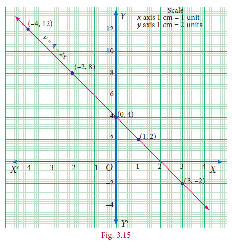
When you plot the points (−4,12), (−2,8), (0,4), (1,2) and (3,−2), you find that they all lie on a line.
This clearly shows that the equation 2x + y = 4 represents a line (and hence said to be linear).
All the points on the line satisfy this equation and hence the ordered pairs of all the points on the line are the solutions of the equation.
Example 3.42
Draw the graph for the following: (i) y= 3x-1 y equal 3 x minus y
(ii) y=(2/3) x+ 3 y equal to 2 by 3 multiply x plus 3
Solution
(i) Let us prepare a table to find the ordered pairs of points for the line y= 3x-1.
We shall assume any value for x, for our convenience let us take −1, 0 and 1.
When x = −1, y = 3(–1)–1 = –4
When x = 0 , y = 3(0)–1 = –1
When x = 1, y = 3(1)–1 = 2
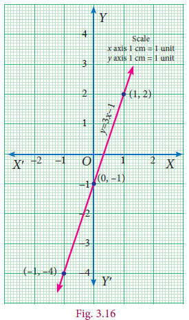
x |
–1 |
0 |
1 |
y |
–4 |
–1 |
2 |
The points (x,y) to be plotted : y x = _+ 2 3 3x = −3 23 33() −+ x = 0 23 03 () + x = 323 33 () +
(−1, −4), (0, −1) and (1, 2).
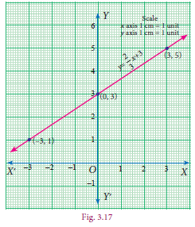
(ii) Let us prepare a table to find the ordered pairs of points
for the line.
Let us assume −3, 0, 3 as x values. (why?)
When , y = = 1
When , y = = 3
When , y = = 5
x |
–3 |
0 |
3 |
y |
1 |
3 |
5 |
The points (x,y) to be plotted :
(−3,1), (0,3) and (3,5).
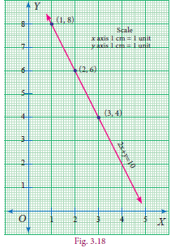
With sufficient background of graphing an equation, now we are set to study about system of equations, particularly pairs of simultaneous equations.
What are simultaneous linear equations? These consists of two or more linear equations with the same variables.
Why do we need them? A single equation like 2x+y =10 has an unlimited number of solutions. The points (1,8), (2,6), (3,4) and many more lie on the graph of the equation, which means these are some of its endless list of solutions. To be able to solve an equation like this, another equation needs to be used alongside it; then it is possible to find a single ordered pair that solves both equations at the same time.
The equations we consider together in such settings make a meaningful situation and are known as simultaneous linear equations.
Real life Situation to understand the simultaneous linear equations
Consider the situation, Anitha bought two erasers and a pencil for ₹10. She does not know the individual cost of each. We shall form an equation by considering the cost of eraser as ‘x’ and that of pencil as ‘y’.
That is 2x + y = 10... (1)
Now, Anitha wants to know the individual cost of an eraser and a pencil. She tries to solve the first equation, assuming various values of x and y.
2 × cost of eraser + 1 × cost of pencil = 10
2(1)+8 =10
2(1.5)+7 =10
2(2)+6 =10
2(2.5)+5 =10
2(3)+4 =10
2 bracket 1 + plus 8 = equal 10
2 bracket 1.5 + plus 7 = equal 10
2 bracket 2 + plus 6 = equal 10
2 bracket 2.5 + plus 5 = equal 10
2(3) + plus 4 = equal 10
Points to be plotted:
X |
1 |
1.5 |
2 |
2.5 |
3 |
… |
Y |
8 |
7 |
6 |
5 |
4 |
… |
She gets infinite number of answers. So, she tries to find the cost with the second equation.
Again, Anitha needs some more pencils and erasers. This time, she bought 3 erasers and 4 pencils, and the shopkeeper received ₹30 as the total cost from her. We shall form an equation like the previous one.
The equation is 3x + 4y = 30...(2)
Even then she arrives at an infinite number of answers.
3 × cost of eraser + 4 × cost of pencil = 30
3(2)+4 (6) = 30
3(4)+4 (4.5) = 30
3(6)+4 (3) = 30
3(8)+4 (1.5) = 30
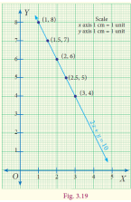
Points to be plotted :
X |
2 |
4 |
6 |
8 |
--- |
y |
6 |
4.5 |
3 |
1.5 |
--- |
While discussing this with her teacher, the teacher suggested that she can get a unique answer if she solves both the equations together. By solving equations (1) and (2) we have the cost of an eraser as ₹2 and cost of a pencil as ₹6. It can be visualised in the graph.
The equations we consider together in such settings make a meaningful situation and are known as simultaneous linear equations.
Thus, a system of linear equations consists of two or more linear equations with the same variables. Then such equations are called Simultaneous linear equations or System of linear equations or a Pair of linear equations.
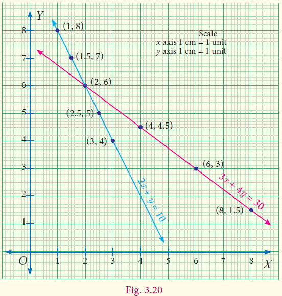
Example 3.43
Check whether (5, −1) is a solution of the simultaneous equations x – 2y = 7 and 2x + 3y = 7.
Solution Given x – 2y = 7 …(1)
2x + 3y = 7 …(2)
x minus 2y equal 7 and
2x plus 3y equal 7
When x = 5, y = −1 we get
From (1) x – 2y = 5 – 2(−1) = 5 + 2 = 7 which is RHS of (1)
X minus 2y equal 5 minus 2 multiply minus 1 equal 5 plus 2 equal 7
From (2) 2x + 3y = 2(5) + 3(−1) = 10−3 = 7 which is RHS of (2)
2 X plus 3y equal 2 multiply 5 multiply plus 3 multiply minus 1 equal 10 minus 3 equal 7
Thus, the values x = 5, y = −1 satisfy both (1) and (2) simultaneously. Therefore (5,−1) is a solution of the given equations.
Progress Check Examine if (3,3) will be a solution for the simultaneous linear equations 2x – 5y – 2 = 0 and x + y – 6 = 0 2x minus 5y minus 2 equal 0 and x plus y minus 6 equal 0 by drawing a graph.
x = 5, y = -1 x value 5, y value minus 1 satisfies(5,-1) bracket 5 comma minus 1 is a solution of the above problem
There are different methods to find the solution of a pair of simultaneous linear equations. It can be broadly classified as geometric way and algebraic ways.
Geometric way |
Algebraic ways
|
1. Graphical method |
1. Substitution method 2. Elimination method 3. Cross multiplication method
|
Solving by Graphical Method Already we have seen graphical representation of linear equation in two variables. Here we shall learn, how we are graphically representing a pair of linear equations in two variables and find the solution of simultaneous linear equations.
Example 3.44 Use graphical method to solve the following system of equations: x + y = 5; 2x – y = 4.
Solution Given x + y = 5...(1)
2x – y = 4...(2)
X plus y equal 5
2 x minus y equal 4
To draw the graph (1) is very easy. We can find the x and y values and thus two of the points on the line (1).
When x = 0, (1) gives y = 5.
Thus A(0,5) is a point on the line.
When y = 0, (1) gives x = 5.
Thus B(5,0) is another point on the line.
Plot A and B ; join them to produce the line (1).
To draw the graph of (2), we can adopt the same procedure.
When x = 0, (2) gives y = −4.
Thus P(0,−4) is a point on the line.
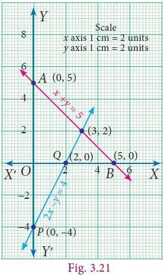
When y = 0, (2) gives x = 2. Th us Q(2,0) is another point on the line. Plot P and Q ; join them to produce the line (2). Th e point of intersection (3, 2) of lines (1) and (2) is a solution. Th e solution is the point that is common to both the lines. Here we find it to be (3,2). We can give the solution as x = 3 and y = 2.
Note
It is always good to verify if the answer obtained is correct and satisfies both the given equations.
Example 3.45 Use graphical method to solve the following system of equations: 3x + 2y = 6; 6x + 4y = 8 3.x plus 2y equal 6 ; 6x plus 4y equal 8
Solution Let us form table of values for each line and then fix the ordered pairs to be plotted.
Graph of 3x + 2y = 6
3x plus 2y equal 6
X |
minus2 |
0 |
2 |
Y |
6 |
3 |
0 |
Points to be plotted : (−2,6), (0,3), (2,0)
Graph of 6x + 4y = 8 6 x plus 4 y equal 8
X |
minus2 |
0 |
2 |
Y |
5 |
2 |
minus1 |
Points to be plotted : (−2,5), (0,2), (2,−1)
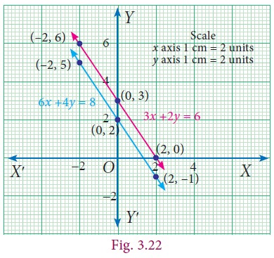
When we draw the graphs of these two equations, we find that they are parallel, and they fail to meet to give a point of intersection. As a result, there is no ordered pair that can be common to both the equations. In this case there is no solution to the system.
Example 3.46 Use graphical method to solve the following system of equations: y = 2x + 1; −4x + 2y = 2
Solution
Let us form table of values for each line and then fi x the ordered pairs to be plotted. Graph of y = 2x + 1
Graph of −4x + 2y = 2
2y = 4x + 2
y = 2x + 1
all in brackets (minus 2 , minus 3) , (minus 1 , minus 1) , (0 , 1) , (1 , 3) , (2 , 5)
-4x + 2y = 2 graph
Minus 4 x plus 2 y equal 2
2y = 4x+2
y = 2x+1
y equal 2 x plus 1
X |
minus2 |
minus1 |
0 |
1 |
2 |
2x |
minus4 |
minus2 |
0 |
2 |
4 |
1 |
1 |
1 |
1 |
1 |
1 |
Y=2x+1 y equal 2x plus 1
|
minus3 |
minus1 |
1 |
3 |
5 |
Points to be plotted : (−2, −3), (−1, −1), (0,1), (1,3), (2, 5)
all bracket (minus 2 , minus 3) , (minus 1 , minus 1) , (0 , 1) , (1 , 3) , (2 , 5)
X |
minus2 |
minus1 |
0 |
1 |
2 |
2x |
minus4 |
minus2 |
0 |
2 |
4 |
1 |
1 |
1 |
1 |
1 |
1 |
Y=2x+1 Y equal 2x plus 1 |
minus3 |
minus1 |
1 |
3 |
5 |
Points to be plotted : (−2, −3), (−1, −1), (0, 1), (1, 3), (2, 5) all bracket (minus 2 , minus 3) , (minus 1 , minus 1) , (0 , 1) , (1 , 3) , (2 , 5)
Here both the equations are identical; they were only represented in different forms. Since they are identical, their solutions are same. All the points on one line are also on the other! This means we have an infinite number of solutions which are the ordered pairs of all the points on the line.
Example 3.47 Th e perimeter of a rectangle is 36 metres, and the length is 2 metres more than three times the width. Find the dimension of rectangle by using the method of graph.
Solution Let us form equations for the given statement.
Let us consider l and b as the length and breadth of the rectangle respectively.
Now let us frame the equation for the first statement.
Perimeter of rectangle = 36
2 (l+b)=36
2 in bracket l plus b
l plus b equal 36/2
l+b=36/ 2
l=18-b... (1) L is equal 18 minus b
b |
minus2 |
4 |
5 |
8 |
18 |
18 |
18 |
18 |
18 |
minusb |
minus2 |
minus4 |
minus5 |
minus8 |
l=18-b L is equal 18 minus b
|
16 |
14 |
13 |
10 |
Points: (2,16), (4,14), (5,13), (8,10)
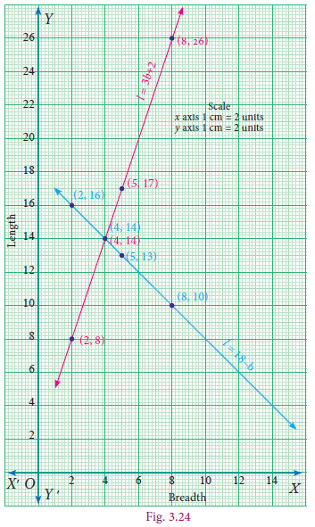
The second statement states that the length is 2 metres more than three times the width which is a straight line written as l =3b+2... (2)
Now we shall form table for the above equation (2).
b |
2 |
4 |
5 |
8 |
3b |
6 |
12 |
15 |
24 |
2 |
2 |
2 |
2 |
2 |
l=3b+2 l is equal to 3b plus 2 |
8 |
14 |
17 |
26 |
Points: (2,8), (4,14), (5,17), (8,26)
The solution is the point that is common to both the lines. Here we find it to be (4,14). We can give the solution to be b = 4, l = 14.
Verification :
2(l+b) = 36...(1) 2 bracket I plus b equal 36
2(14+4) = 36
2 × 18 = 36
36 = 36 true
l = 3b + 2...(2)
14 = 3(4) +2
14 = 12 + 2
14 = 14 true
2 bracket I plus b equal 36 I = 3b + 2...(2)
l is equal to 3 b plus 2
2(14 plus 4) equal 36 14 equal 3 multiply 4 plus 2
2 multiply 18 equal 36 14 equal 12 + 2
36 equal 36 true 14 equal 14 true
Exercise 3.10
1. Draw the graph for the following
(i) y=2 x (ii) y=4x-1 (iii)y=93/20x+3 (iv) 3x+2 y = 14
1. y = 2 x 2. y = 4x-1 (3 ) y = 93/20x+3 (4 ) 3x+2 y = 14
1. Y equal 2 x 2. Y equal 4 x minus 1 3. y equal 93 by 20x plus 3 4 . 3 x plus 2 y equal 14
2.Solve graphically
(i) x+y=7; x-y=3
(ii)3x+2y=4;9x+6y-12=0
(iii)x/2+y/4=1; x/2+y/4=2
(iv) x-y=0; y+3 = 0
(v)y=2x+1; y+3x-6=0
(vi) x = –3; y = 3
3.Two cars are 100 miles apart. If they drive towards each other they will meet in 1 hour. If they drive in the same direction they will meet in 2 hours. Find their speed by using graphical method.
Some special terminology
We found that the graphs of equations within a system tell us how many solutions there for that system are. Here is a visual summary.
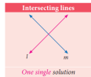
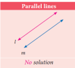
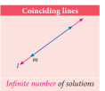
Solving by Substitution Method
In this method we substitute the value of one variable, by expressing it in terms of the other variable to reduce the given equation of two variables into equation of one variable (in order to solve the pair of linear equations). Since we are substituting the value of one variable in terms of the other variable, this method is called substitution method.
The procedure may be put shortly as follows:
Step 1: From any of the given two equations, find the value of one variable in terms of the other.
Step 2: Substitute the value of the variable, obtained in step 1 in the other equation and solve it.
Step 3: Substitute the value of the variable obtained in step 2 in the result of step 1 and get the value of the remaining unknown variable.
Example 3.48 Solve the system of linear equations x y + = 316 and 24 x y − = by substitution method.
Solution
Given x y + = 316... (1)
2x – y = 4... (2)
2x - y = 4. equation 2)
X plus 3y equal 16.. equation 1
2x minus y equal 4. .. equation 2
Step 1 |
Step 2 |
Step 3 |
Step 4 |
From equation (2) 2x −y= 4 –y = 4–2x Y= x − 24...(3) 2x minus y equal 4 minus y equal 4 minus 2x Y equal x minus 24. ..3)
|
Substitute (3) in (1) x+3y= 16 x+3(2x -4) = 16 x+6x-12=16 7x=28 x = 4 x plus 3y equal 16 x plus 3 bracket 2x minus 4 equal 16 x plus 6x minus 12 equal 16 7x equal 28 x equal 4 |
Substitute x = 4 in (3) Y= 2x-4 y =2(4) −4 y = 4 Y equal 2x minus 4 y equal 2 bracket 4 minus 4 y equal 4 |
X=4 and y=4 |
Example 3.49 Th e sum of the digits of a given two-digit number is 5. If the digits are reversed, the new number is reduced by 27. Find the given number.
Solution
Let x be the digit at ten’s place and y be the digit at unit place.
Given that x+ y= 5 …… (1)
|
Tens |
Ones |
Value |
Given Number |
X |
Y |
10x+y 10x plus y |
New Number(after reversal) |
Y |
X |
10y+x 10y plus x |
Verification :
sum of the digits = 5
x + y = 5
4 + 1 = 5
5 = 5 true
Original number – reversed number = 27
41 - 14 = 27
27 = 27 true
Given, Original number − reversing number = 27
(10x+y)-(10y+x) =27
10x-x+y-10 y=27
9x-9y=27
x- y= 3... (2)
Also, from (1), y = 5 – x... (3)
Substitute (3) in (2) to get x –(5-x)=3
x −5 +x = 3
2x =8
x = 4
x = 4
Substituting y x = 4 in (3), we get y=5-x=5-1
y = 1
Thus, 10x+y=10X4+1=40+1=41.
Therefore, the given two-digit number is 41.
Example 3.49 solution x plus 5 equal 5 equation 1
x minus 5 equal 3 equation 2
y equal 5 minus x equation 3
3 equations simplify
x value 4 check progress :5 equal 5 verified Therefore, the given two-digit number is 41.